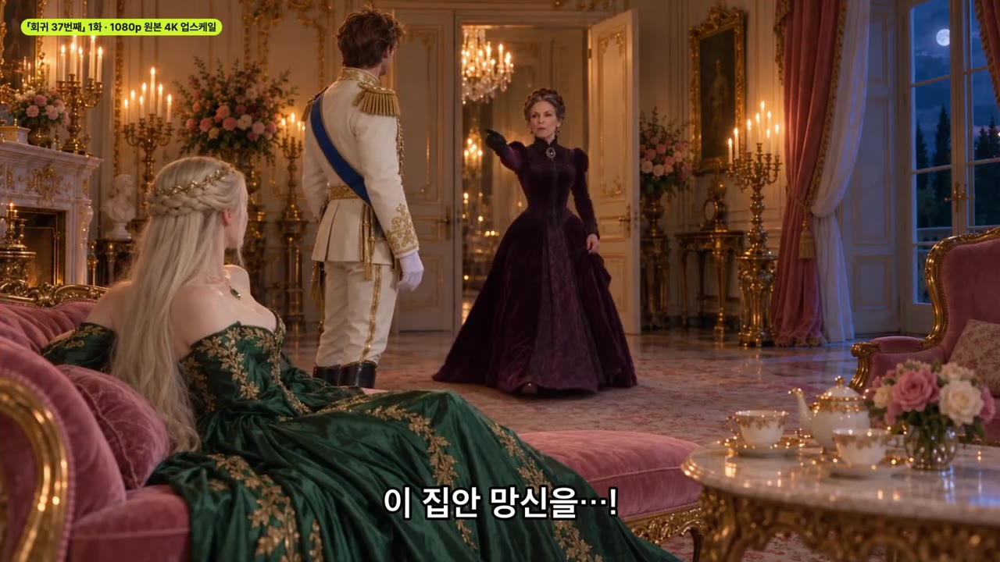
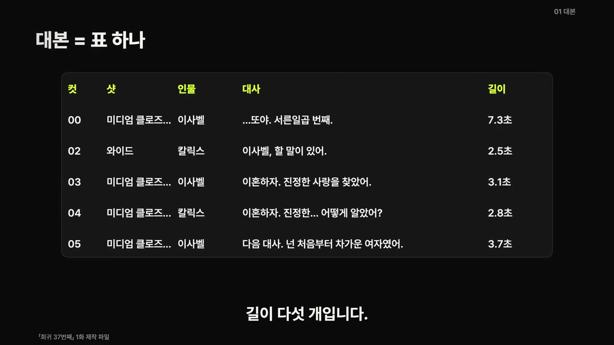
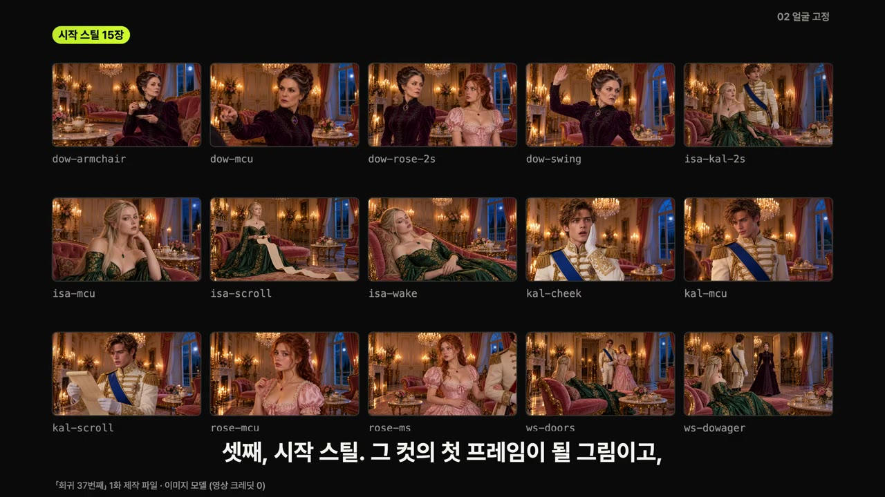
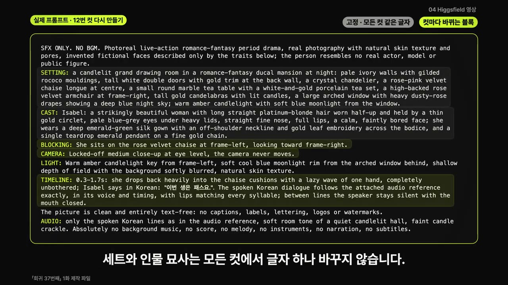
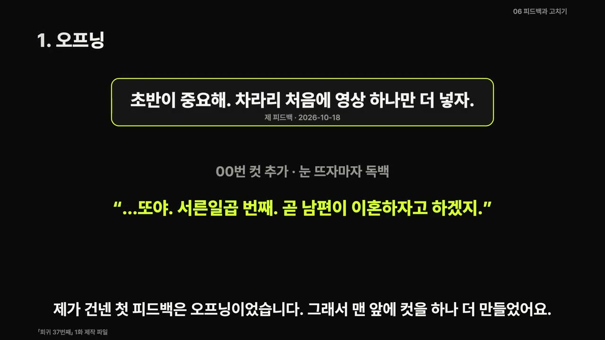
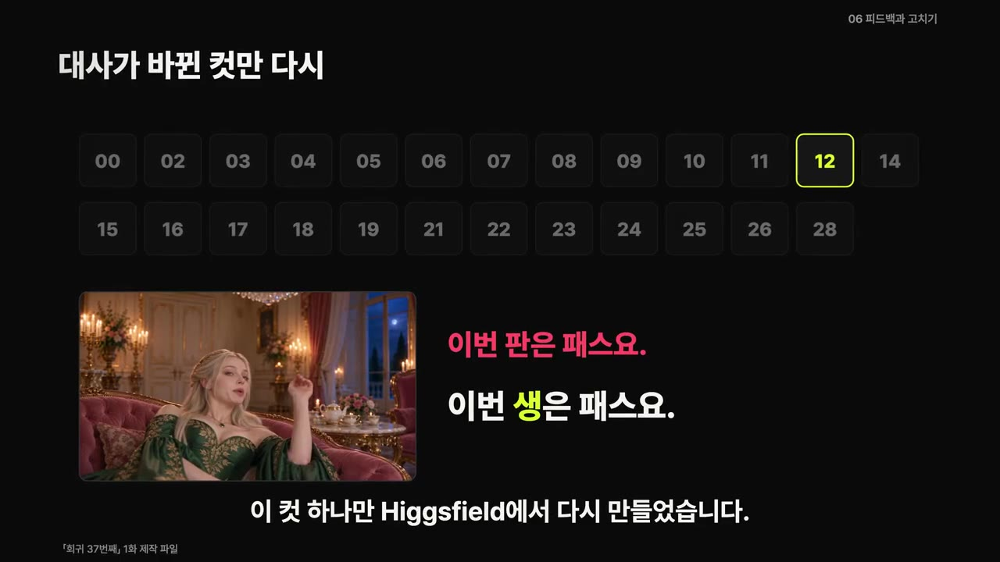
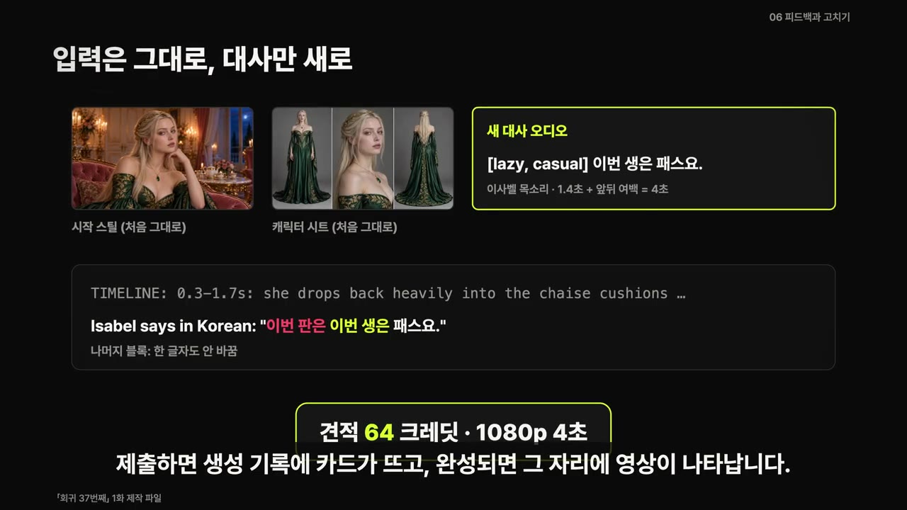

AI로 막장 로판 숏드라마 만드는 법 | 대본부터 영상까지 6단계, 프롬프트 그대로 공개
🎙️ 자막 대신 영상 음성을 받아써서 정리 (ko (음성 받아쓰기·GPU))
▶ 원본 영상 보기한눈에 보기
- 배우·세트·목소리를 모두 AI로 만든 1분 11초 막장 로맨스 판타지 「회귀 37번째」 1화를 대본 → 얼굴 고정 → 목소리 → 영상 → 편집 → 고치기, 6단계로 만든 과정을 보여 줍니다.
- 컷이 바뀌어도 얼굴과 드레스가 같게 나오는 방법은 세 가지입니다. 캐릭터 시트와 컷별 시작 스틸을 미리 만들고, 인물 묘사 문장을 모든 프롬프트에 한 글자도 바꾸지 않고 붙입니다.
- ElevenLabs로 만든 대사 파일은 영상 위에 덧씌우지 않습니다. Higgsfield Seedance 2.5 레퍼런스 모드에 오디오 레퍼런스로 넣어 입 모양까지 맞춥니다.
- 크레딧은 영상 생성 단계에서만 듭니다. 1화 전체에 2,450크레딧이 들었고, 그중 128크레딧은 견적을 내려다 실수로 생성이 돌아가서 쓰였습니다.
- 고칠 때는 문제가 된 컷 하나만 같은 시작 스틸·시트로 다시 만들고, 이전 버전은 지우지 않고 새 이름으로 남깁니다.
이런 분께 도움이 됩니다
- AI로 숏드라마나 웹드라마 형식의 영상을 만들어 보고 싶은 분
- AI 영상에서 컷마다 인물 얼굴이 바뀌거나 입 모양이 대사와 어긋나 고민인 분
- 영상 생성 크레딧을 아끼면서 수정까지 하는 작업 순서가 궁금한 분
핵심 내용
전체 구조: 6단계, 크레딧은 한 단계에서만
- 이 영상은 Higgsfield 크리에이터 캠페인에 참여한 유료광고 영상입니다(설명란 표기). 사용 도구는 Higgsfield(Seedance 2.5 레퍼런스 모드), ElevenLabs, Claude입니다.
- 진행자가 AI 에이전트에게 "요즘 뜨는 K막장 로판을 만들어 봐라" 하고 맡겼더니 약 50분 만에 첫 영상이 나왔습니다. 대사가 어색하고 너무 AI 같아서 5번 정도 고치라고 다시 지시했습니다. (0:59)
- Higgsfield 크레딧이 드는 건 4번째 영상 단계뿐이라서, 앞의 세 단계(대본·얼굴·목소리)를 먼저 끝내 둡니다. (3:00)
- 작업 폴더를 하나 만들고 단계가 끝날 때마다 결과 파일을 남깁니다. 영상에 나오는 숫자는 모두 이 기록에서 나왔습니다.
- 대본
- 얼굴 고정
- 목소리
- 영상
- 편집
- 고치기
- 1대본
한 줄이 한 컷인 대본 표를 만든다 (3:48)
- 2얼굴 고정
캐릭터 시트·세트·시작 스틸 그림을 먼저 만든다
- 3목소리
인물마다 ElevenLabs 목소리 하나, 대사에 연기 지시 태그를 붙인다
- 4영상
Higgsfield Seedance 2.5 레퍼런스 모드로 컷을 만든다 (크레딧 사용)
- 5편집
생성된 목소리를 기준으로 자르고 싱크를 검사한다
- 6고치기
피드백을 받은 컷만 다시 만든다

대본: 공식을 뒤집고, 첫 5초 안에 이해시키기
- 막장 로판에는 공식이 있습니다. 주인공이 회귀하고(죽었다가 과거로 돌아감), 남편이 이혼하자고 오고, 시어머니가 뺨을 때립니다. 이 1화는 그 공식을 뒤집습니다. (3:50)
- 같은 막장을 37번 겪은 주인공에게는 막장이 지겨운 재방송일 뿐입니다. 그래서 남편이 말하기 전에 주인공이 "이혼하자"를 먼저 말해 버립니다.
- 노린 반전은 하나입니다. 서양 왕실의 외국인 배우들이 한국어로 막장 대사를 주고받습니다.
- 구성에서 가장 중요한 건 직관적인 연출입니다. 첫 5초 안에 무슨 이야기인지 알 수 있어야 합니다. (4:33)
- 대본은 표 하나로 씁니다. 칸은 컷 번호, 샷 크기, 인물, 대사, 길이 5개입니다.

- 시작 스틸, 대사 파일, 영상 클립이 모두 이 표의 줄 번호를 따라갑니다.
- 프롬프트를 쓰는 방식은 다음과 같습니다.
- 첫 줄에 무엇을 만들지 쓰고, 주인공·등장인물·장소는 ○○으로 비워 두고 괄호 안에 예시를 넣습니다.
- 규칙에 번호를 붙입니다. 2번이 '첫 5초' 규칙, 3번이 '꼬지 말라'(말장난 금지) 규칙입니다.
- 마지막 줄에 완료 조건(몇 컷, 몇 초)을 적으면 결과물 크기가 맞춰집니다.
💡 연출 방향 하나가 프롬프트 규칙 한 줄이 된다.
얼굴 고정: 영상 모델은 앞 컷을 기억하지 못한다
- 영상 모델은 컷마다 새로 그리기 때문에, 그냥 두면 주인공 이사벨의 얼굴과 드레스가 컷마다 조금씩 달라집니다. 그래서 영상을 만들기 전에 그림 세 종류를 먼저 만듭니다. (5:45)
| 그림 | 내용 | 수량 |
|---|---|---|
| 캐릭터 시트 | 정면 상반신·측면·전신을 한 장에 | 인물마다 1장 |
| 세트 | 모든 장면이 벌어지는 응접실 | 1장 |
| 시작 스틸 | 그 컷의 첫 프레임이 될 그림 | 구도가 같은 컷끼리 1장 공유 |
- 1화에 든 그림은 모두 15장입니다. 이미지 모델로 따로 만들어서 영상 크레딧이 들지 않았습니다. Higgsfield의 이미지 모델로 만들어도 순서는 같습니다.

- 인물 묘사 문장(고정 묘사)은 모든 프롬프트에 똑같이 붙이고, 한 단어도 줄이지 않습니다. (5:59)
- 예: 백금발 반묶음, 가는 금 서클릿, 에메랄드 실크 드레스, 물방울 에메랄드 펜던트
- 시작 스틸에서 확인할 것은 하나, 누가 어디에 앉고 서 있는지가 앞 컷과 맞는지입니다.
- 실패 사례: 대공비가 들어오는 와이드 컷에 방금까지 있던 로즈가 없었습니다. 시작 스틸에 로즈를 그리지 않았고, 영상 모델은 없는 사람을 채워 넣지 않습니다.
💡 시작 스틸에 없는 사람은 영상에도 없다.
목소리: 연기 지시 태그로 말투 정하기
- 목소리는 ElevenLabs 보이스 라이브러리에서 인물마다 하나씩 골랐고, 대사 25줄을 모두 그 목소리로 만들었습니다. (7:06)
- 대사 앞에 영어 대괄호로 연기 지시를 붙입니다. 이사벨 대사에는 '지루하게', '무표정하게' 같은 지시가 붙었습니다.
- 대괄호 안의 말은 소리로 읽히지 않고, 뒤에 오는 대사의 말투만 정합니다.
- 한 줄 중간에 대괄호를 또 넣으면 거기서 말투가 바뀝니다. 칼릭스는 "이혼하자"를 극적으로 말하다가
[confused]뒤에서 당황한 목소리로 바뀝니다. [beat]는 한 박자 쉬라는 지시입니다. 대공비 대사에서는 이 자리에 0.5초 쉼이 생겼습니다.
- 대사 파일은 영상 위에 덧씌우지 않고, 영상 생성에 오디오 레퍼런스로 넣습니다. (7:45)
- Seedance 2.5는 레퍼런스 대사에 맞춰 입을 움직입니다. 목소리는 새로 내지만 음 높이는 레퍼런스와 비슷하게 따라갑니다.
- 대사 파일 이름은 대본 표의 컷 번호와 맞춰 저장합니다.
영상: Seedance 2.5 레퍼런스 모드와 블록 프롬프트
- 레퍼런스 모드에 넣는 것은 세 가지이고, 각각 정하는 것이 다릅니다. (8:30)
| 넣는 것 | 정하는 것 |
|---|---|
| 시작 스틸 | 첫 프레임과 구도 |
| 캐릭터 시트 | 얼굴과 의상 |
| 대사 오디오 | 대사와 타이밍 |
- 프롬프트는 블록 순서를 정해 두고 매번 같은 순서로 씁니다:
SFX ONLY. NO BGM.→ 화풍 →SETTING→CAST→BLOCKING→CAMERA→LIGHT→TIMELINE→AUDIO.

- 세트와 인물 묘사는 모든 컷에서 한 글자도 바꾸지 않습니다. 컷마다 바뀌는 건 인물 위치·카메라·타임라인 세 블록뿐입니다. (8:45)
- 방향은 frame-left / frame-right(화면 기준 왼쪽·오른쪽)로만 씁니다. '그녀의 왼쪽'보다 정확합니다.
- 카메라는 한 줄로 못 박습니다. 예: 눈높이, 미디엄 클로즈업, 카메라 고정.
- 타임라인에는 몇 초에 무엇을 하는지와 한국어 대사를 그대로 적습니다.
- 연출은 감정 이름이 아니라 동작으로 씁니다. 예: "쿠션에 털썩 기대며 한 손을 대충 흔든다".
- AUDIO 블록에는 배경음악을 넣지 말라고 분명히 씁니다. 음악은 편집에서 따로 깝니다.
- 본 생성 전에 시험 생성을 먼저 했습니다. 480p, 6초짜리를 18크레딧에 만들어 두 줄 대사가 그대로 나오고 입이 음절마다 움직이는지 확인했습니다.
- 본 생성 결과:
- 1080p, 17개 클립, 합계 105초
- 3번에 나눠 5분 안에 제출했고, 마지막 클립이 도착하기까지 약 9분이 걸렸습니다. (9:32)
- 1분짜리에 105초를 만든 이유: 같은 구도에서 이어지는 대사를 한 클립으로 묶어 만든 뒤 잘랐기 때문입니다.
- 16초까지 길게 묶은 클립에서는 대사 타이밍이 줄마다 최대 1.5초씩 흔들렸습니다. 그래서 다음 화부터는 한 클립에 3줄, 10초 이하로 묶기로 했습니다.
💡 클립을 길게 묶으면 크레딧은 아껴도 싱크가 무너진다. 3줄·10초가 한계선이다.
편집: 생성된 목소리를 기준으로
- 처음에는 ElevenLabs 원본 대사를 영상 위에 다시 깔 계획이었습니다. 그런데 생성된 영상은 줄마다 타이밍과 말 빠르기가 조금씩 달라서 입이 어긋났습니다. 그래서 영상이 낸 목소리를 그대로 씁니다. 음 높이가 레퍼런스를 따라가므로 인물마다 같은 사람으로 들립니다. (10:23)
- 길이 오차도 함정이었습니다. 컷을 자를 때마다 그림과 소리 길이가 조금씩 달랐고, 이 차이가 쌓여 끝에서는 소리가 0.82초 먼저 나왔습니다.
- 해결: 그림과 소리를 같은 프레임 격자에서 자르고, 컷마다 입과 소리가 한 프레임 안에서 맞는지 검사하는 스크립트를 돌렸습니다. 마지막 버전에서는 대사 구간 전부가 한 프레임 안에서 맞았습니다.
- 화면에는 대사 자막 말고는 아무것도 얹지 않습니다.
고치기: 피드백 4가지와 한 컷만 다시 만들기
- 첫 완성본을 보고 고친 것은 네 가지입니다: 오프닝, 대사 5줄, '판'이라는 말, 화면 글자. (11:06)
- 오프닝: 첫 완성본은 제목 카드를 띄우고 남편이 "할 말이 있다"며 들어오는 장면으로 시작했습니다. 그래서 맨 앞에 컷을 하나 더 만들었습니다. 이사벨이 눈을 뜨자마자 몇 번째 생인지, 곧 무슨 일이 생기는지를 한 줄로 말합니다.

- 대사 5줄: 듣자마자 알아듣는 말로 바꿨습니다.
- 7번 컷: 첫 완성본에서 이사벨이 남편의 연기를 지도하던 대사를 바꿈
- 9번 컷: 로즈에게 하는 말이라는 게 바로 들리게 바꿈
- 21번 컷: 남편이 질문을 하나 던짐 — 다시 태어난 게 이사벨 혼자가 아닐 수도 있다는 복선
- '판' → '번째 생': 회차를 세는 말을 맞췄습니다(17번 컷). 12번 컷에 남아 있던 "이번 판은 패스요"를 "이번 생은 패스요"로 바꿔 그 컷 하나만 다시 만들었습니다. (12:22)

- 새 대사를 이사벨 목소리로 한 줄 만들고, 시작 스틸과 시트는 처음 것 그대로 넣었습니다. 프롬프트는 타임라인의 대사만 바꿨습니다.
- 제출 전 견적: 1080p, 4초에 64크레딧

- 결과: 약 8분 반(자막상 "8번 반", 불분명) 만에 새 대사가 그대로 나왔습니다. 대사가 2.5초 늦게 시작해서 편집에서 말 시작 직전에 맞춰 잘랐습니다.
- 화면 글자: 28번 컷은 로즈의 대사를 "저는 첫 판인데요"에서 "저는 처음 나왔는데요"로 고쳤고, 끝에 붙어 있던 다음 화 예고와 가짜 광고 카드를 뺐습니다.
- 고친 버전은 이전 버전을 지우지 않고 새 이름으로 저장합니다. 버전끼리 나란히 놓고 비교하기 위해서입니다. (13:25)
크레딧 결산과 실수
- 1화 전체에 든 Higgsfield 크레딧은 2,450입니다. (14:31)
| 항목 | 크레딧 |
|---|---|
| 첫 완성본 | 1,698 |
| 오프닝·대사 수정 | 608 |
| 12번 컷 다시 만들기 | 64 |
| 7번 컷 다시 만들기 | 80 |
| 합계 | 2,450 |
- 그중 128크레딧은 실수로 나갔습니다. 견적만 받으려다 견적 옵션을 잘못된 자리에 넣었고, 프롬프트 칸에 글자 'X' 하나만 들어간 8초짜리 생성이 실제로 돌았습니다.
💡 견적은 비용만 보여 주는 견적 기능으로 확인한다. 옵션 위치를 틀리면 그대로 생성이 돈다.
따라 해보기
준비물
- Claude(또는 다른 AI 에이전트): 대본 표, 시트 프롬프트, 연기 지시, Seedance 프롬프트 작성
- 이미지 생성 모델: 캐릭터 시트·세트·시작 스틸용. Higgsfield 이미지 모델도 가능(설명란에 Nano Banana Pro 언급)
- ElevenLabs: 보이스 라이브러리, v4 연기 지시 태그 사용
- Higgsfield 계정과 크레딧: Seedance 2.5 레퍼런스 모드. 영상 사례 기준 1화에 약 2,450크레딧(실수분 포함)
- 편집 프로그램: 영상에 이름은 나오지 않음
- 작업 폴더 1개: 단계별 결과 파일 저장용
- 소요 시간: AI 에이전트 기준 첫 영상까지 약 50분, 이후 수정 약 5회
단계별 방법
- 1작업 폴더 만들기
폴더를 하나 만들고, 단계가 끝날 때마다 결과 파일을 저장한다 (3:00)
- 2대본 표 만들기
아래 프롬프트 01을 Claude에 붙이고 ○○을 채운다. 25컷 안팎, 합계 60~70초 표가 나오면 끝 (5:02)
- 1번 컷은 주인공이 눈을 뜨고 한 줄로 상황을 말하는 컷
- 3인물 시트 만들기
프롬프트 02로 인물마다 이미지 프롬프트와 '고정 묘사' 문단을 받아 시트를 그린다 (6:50)
- 고정 묘사 문단은 따로 파일로 저장(이후 모든 영상 프롬프트에 그대로 붙임)
- 4세트·시작 스틸
장소 세트 1장, 구도마다 시작 스틸 1장을 그린다
- 컷마다 인물 위치가 앞 컷과 맞는지, 있어야 할 인물이 빠지지 않았는지 확인
- 5목소리 정하기
ElevenLabs 보이스 라이브러리에서 인물마다 목소리 하나를 고른다
- 6연기 지시 붙이기
프롬프트 03으로 대사마다 영어 대괄호 태그를 붙이고, 대사 파일을 만들어 컷 번호 이름으로 저장한다
- 7Seedance 프롬프트
프롬프트 04에 대본 표 한 줄과 고정 묘사를 넣어 컷별 영어 프롬프트를 만든다
- 8480p 시험 생성
Higgsfield Seedance 2.5 레퍼런스 모드에 시작 스틸·캐릭터 시트·대사 오디오를 넣고 480p 짧은 영상으로 입 모양과 대사를 확인한다
- 영상 사례: 6초, 18크레딧
- 91080p 본 생성
견적 기능으로 비용을 먼저 보고 제출한다. 한 클립에 3줄, 10초 이하로 묶는다
- 10편집
생성된 목소리를 기준으로, 그림과 소리를 같은 프레임 격자에서 자른다. 배경음악은 여기서 깔고, 화면 글자는 대사 자막만 남긴다
- 11한 컷 고치기
프롬프트 06으로 타임라인 대사만 바꾸고, 같은 시작 스틸·시트로 그 컷만 다시 만든다. 이전 버전은 새 이름으로 보관
2단계에 입력할 내용 (01 대본 표)
막장 로맨스 판타지 1분 숏드라마 1화 대본을 표로 써 줘.
주인공: ○○ (예: 같은 막장을 37번 겪어서 모든 전개가 지겨운 공작부인)
등장인물: ○○ (4명 이하) · 장소: ○○ (한 곳)
1) 한 줄 = 한 컷. 칸은 컷 번호, 샷 크기, 인물, 대사, 길이(초).
2) 1번 컷: 주인공이 눈을 뜨고 한 줄로 상황을 말한다 (반복, 횟수, 곧 일어날 일).
3) 대사는 짧고 직관적으로. 시청자가 풀어야 하는 말장난은 빼.
4) 막장 클리셰는 한 컷에 하나씩, 반전은 마지막에 하나만.
완료 조건: 25컷 안팎, 합계 60~70초인 표가 나오면 끝.
3단계에 입력할 내용 (02 인물 시트)
○○ 인물의 캐릭터 시트용 이미지 프롬프트를 영어로 써 줘.
1) 한 장에 정면 상반신, 측면, 전신 세 칸. 배경은 무지.
2) 얼굴·머리·의상·장신구를 구체적인 단어로 한 문단에 묘사하고,
그 문단을 '고정 묘사'로 따로 보여 줘.
3) 실존 배우나 유명인과 닮게 쓰지 말고, 나이는 쓰지 마.
4) 글자·로고·워터마크 없는 깨끗한 그림으로.
완료 조건: 이미지 프롬프트 1개 + 영상 프롬프트에 붙일 고정 묘사 1문단.
6단계에 입력할 내용 (03 연기 지시)
아래 대사 표의 각 줄 앞에 ElevenLabs v4 연기 지시 태그를 영어 대괄호로 붙여 줘.
인물: ○○ (성격 한 줄) · 장면 분위기: ○○
1) 태그는 줄마다 1~3개, 감정 이름보다 말투로 (예: [flat, bored, deadpan]).
2) 대사 글자는 한 글자도 바꾸지 마.
3) 같은 인물은 화 전체에서 같은 목소리로 읽는다고 가정해.
완료 조건: 태그가 붙은 대사 표 1개.
[대사 표] ○○
7단계에 입력할 내용 (04 Seedance 프롬프트)
아래 대본 표의 ○○번 컷을 Seedance 2.5 레퍼런스 모드용 영어 프롬프트로 바꿔 줘.
블록 순서: SFX ONLY. NO BGM. → 화풍 → SETTING → CAST → BLOCKING → CAMERA → LIGHT → TIMELINE → AUDIO
1) SETTING과 CAST는 아래 고정 묘사를 한 글자도 바꾸지 말고 붙여.
2) 방향은 frame-left / frame-right로만 써.
3) TIMELINE에 초 단위 동작과 한국어 대사를 그대로 적고, 대사는 첨부한 오디오를 따른다고 써.
4) 실존 인물과 닮지 않게 쓰고, 나이는 쓰지 마.
5) AUDIO 블록: 이 장면의 실내 소리와 효과음, 그리고 마지막 줄 Absolutely no background music, no score, no melody, no instruments, no narration, no subtitles.
완료 조건: 그대로 붙여 넣을 수 있는 프롬프트 1개.
[대본 표 한 줄] ○○ [고정 묘사] ○○
11단계에 입력할 내용 (06 한 컷 고치기)
○○번 컷의 대사를 '○○'에서 '○○'로 바꾸려고 해. 원래 프롬프트는 아래와 같아.
1) TIMELINE의 대사와 동작 시간만 새 대사에 맞게 고치고, 나머지 블록은 한 글자도 바꾸지 마.
2) 바뀐 줄만 따로 표시하고, 대사 길이가 바뀌면 필요한 영상 길이(초)도 알려 줘.
완료 조건: 수정한 프롬프트 1개, 바뀐 줄 목록, 영상 길이.
[원래 프롬프트]
따라 할 수 있는지 점검
- ✅ 바로 따라 할 수 있음: 1·2·3·6·7·11단계는 프롬프트 원문이 설명란에 그대로 있어 ○○만 채우면 됩니다.
- ⚠️ 4단계 「세트·시작 스틸」: 어떤 이미지 모델을 썼는지, 세트·시작 스틸용 프롬프트는 무엇인지 영상에 나오지 않습니다. → 프롬프트 02의 형식을 본떠 "배경은 고정 세트, 인물 위치는 대본 표의 샷 크기대로" 같은 요청을 직접 만들어야 합니다(보충). 이미지 모델은 Higgsfield 안의 이미지 모델(설명란: Nano Banana Pro 등)을 쓰면 됩니다.
- ⚠️ 5단계 「목소리 정하기」: 보이스 라이브러리에서 목소리를 고른 기준과, ElevenLabs 유료 요금제가 필요한지는 영상에 나오지 않습니다. → ElevenLabs 공식 사이트에서 v4 태그를 지원하는 요금제를 확인하세요(보충).
- ⚠️ 7단계 「Seedance 프롬프트」: '화풍' 블록에 무엇을 썼는지는 말로 설명되지 않았습니다. → 영상 8:55 화면의 12번 컷 프롬프트 전체를 멈춰서 확인하세요.
- ⚠️ 8~9단계 「시험·본 생성」: Higgsfield는 크레딧 구매가 필요한 유료 서비스입니다. 레퍼런스 모드에서 시작 스틸·시트·오디오를 올리는 메뉴 위치와, 견적 기능을 켜는 방법도 자세히 나오지 않습니다. → Higgsfield 화면에서 Seedance 2.5 → Reference 모드를 찾고, 첫 생성 전에 견적 표시를 반드시 확인하세요. 영상 속 128크레딧 실수가 바로 이 단계에서 났습니다.
- ⚠️ 10단계 「편집」: 편집 프로그램 이름과, 입·소리 싱크를 검사한 스크립트가 공개되지 않았습니다(편집 단계는 설명란 프롬프트에도 05번이 빠져 있음). 배경음악을 어디서 구했는지도 나오지 않습니다. → 일반 편집 프로그램에서 프로젝트 프레임레이트를 고정하고, 컷 경계마다 입 모양과 소리를 눈으로 확인하는 방식으로 대신할 수 있습니다(보충). 음악은 저작권이 해결된 음원을 쓰세요(보충).
- ❓ 고친 대사 수가 "대사 5줄"(11:06)과 "대사 4줄"(14:06 부근)로 엇갈립니다. 12번 컷을 따로 센 차이로 보입니다.
- ❓ 대본 프롬프트의 완료 조건은 '25컷 안팎'인데, 고치기 단계에서는 28번 컷이 언급됩니다. 오프닝 컷 추가 등으로 컷 수가 늘어난 것으로 보입니다.
확인 방법
- 480p 시험 영상에서 대사가 그대로 나오고 입이 음절마다 움직이면 본 생성으로 넘어갑니다.
- 컷이 바뀌어도 머리 모양·장신구·드레스가 같은지 이어서 보며 확인합니다.
- 완성본 끝부분에서 소리가 그림보다 먼저(또는 늦게) 나오지 않는지 확인합니다. 영상 사례에서는 오차가 쌓여 0.82초 어긋났습니다.
- 처음 5초만 보고 무슨 이야기인지 알 수 있는지 다른 사람에게 보여 줍니다.
막히면
- 얼굴·드레스가 컷마다 다름: 고정 묘사를 줄이거나 바꿔 쓰지 않았는지, 캐릭터 시트를 레퍼런스로 넣었는지 확인합니다.
- 있어야 할 인물이 화면에서 사라짐: 시작 스틸에 그 인물이 그려져 있는지 확인합니다. 모델은 없는 사람을 채워 넣지 않습니다.
- 대사 타이밍이 흔들림: 클립을 3줄, 10초 이하로 다시 나눕니다.
- 원본 대사 파일을 덧씌웠더니 입이 어긋남: 생성된 영상의 목소리를 그대로 씁니다.
- 새로 만든 컷의 대사가 늦게 시작함: 편집에서 말 시작 직전에 맞춰 자릅니다(사례: 2.5초 지연).
- 견적만 보려다 생성이 돌아감: 견적 옵션 위치를 다시 확인합니다(사례: 'X' 한 글자로 8초 생성, 128크레딧 손실).
기억할 숫자·인용
- 완성본 길이: 1분 11초. 대사 25줄, 그림 15장
- 시험 생성: 480p, 6초, 18크레딧
- 본 생성: 1080p, 17개 클립, 합계 105초, 제출 후 약 9분
- 긴 클립(16초)에서 대사 타이밍이 줄마다 최대 1.5초 흔들림 → 한 클립 3줄·10초 이하
- 편집 오차 누적: 끝에서 소리가 0.82초 먼저 나옴 → 최종본은 모든 대사가 한 프레임 안에서 맞음
- 크레딧: 첫 완성본 1,698 + 수정 608 + 12번 컷 64 + 7번 컷 80 = 2,450 (실수로 쓴 128 포함)
- 인상적인 대사: "이번 생은 패스요", "난 서른여섯 번 맞았어"
- "영상 모델은 앞 컷을 기억하지 못합니다."
생각해볼 점
- 이 영상은 Higgsfield 캠페인 유료광고입니다. 다른 영상 생성 서비스와 비용·품질을 비교하는 내용은 없습니다.
- 진행자는 AI 에이전트가 대부분을 50분 만에 해냈다고 말합니다. 하지만 프레임 단위 싱크 검사 스크립트와 파일 관리는 에이전트를 쓰지 않으면 직접 해야 해서, 혼자 수작업으로 따라 하면 시간이 훨씬 더 들 수 있습니다(내 의견).
- 2,450크레딧이 실제 돈으로 얼마인지는 나오지 않습니다. 요금제에 따라 1분짜리 1화의 비용이 크게 달라질 수 있으니 시작 전에 확인해야 합니다.
바로 해볼 일
- 프롬프트 01에 내가 만들고 싶은 장르·주인공을 넣어 Claude로 대본 표 하나 받아 보기
- 주인공 1명의 캐릭터 시트와 '고정 묘사' 문단을 만들어 작업 폴더에 저장하기
- Higgsfield에서 크레딧 견적 기능 위치를 먼저 확인한 뒤, 480p 짧은 시험 생성 한 번 해 보기